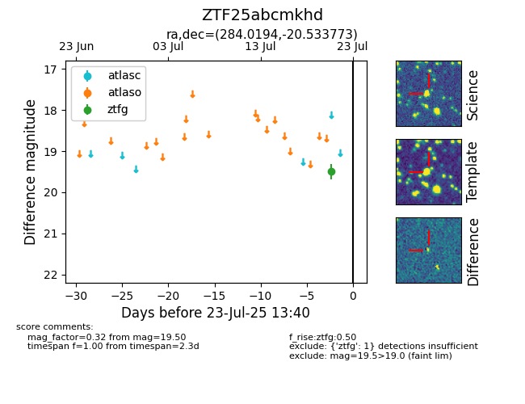

Target ZTF25abcmkhd at 2025-07-23 13:40, see:
FINK: fink-portal.org/ZTF25abcmkhd
Lasair: lasair-ztf.lsst.ac.uk/objects/ZTF25abcmkhd
ALeRCE: alerce.online/object/ZTF25abcmkhd
alt names
ZTF25abcmkhd (ztf,fink)
coordinates:
equatorial (ra, dec) = (284.0194,-20.53377)
galactic (l, b) = (14.9699,-10.18410)
photometry
last ztfg=19.50
1 ztfg detections
